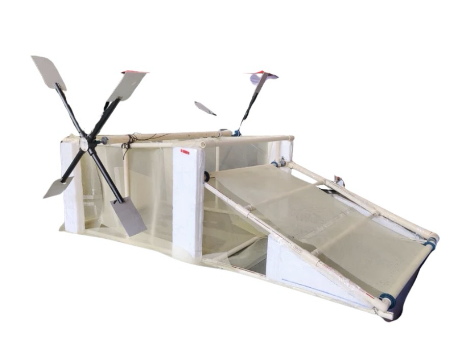

Hyderabad, India · Field research & engineering
Lake Sentry
Technology, awareness and action for cleaner urban lakes: a low-cost floating robot that removes trash, and a campaign that stops it arriving.
Move your cursor across the water to make ripples and scare the fish. Click or tap for a splash.
Trash collected by the mini Lake Sentry: 0
The dual-solution framework
Cleaning the waste already in our lakes is necessary. Preventing new waste is just as important.
-
01 · Prevent
Awareness campaign
Instagram, LinkedIn and offline installations like “The Rollers” that educate people and encourage responsible waste disposal.
-
02 · Remove
Lake Sentry V1 → V2
A remote-controlled floating machine built from CPVC pipe that scoops trash off the surface with a mesh conveyor belt.
-
03 · Connect
LakeSentry.in
A lake map, a research page for each lake, and a reviewed network of community clean-up initiatives.
- SDG 6 · Clean Water & Sanitation
- SDG 11 · Sustainable Cities
- SDG 12 · Responsible Consumption
- SDG 14 · Life Below Water
Close to home
The trash is visible, physical and ongoing.
This year's clean-up drives pulled staggering amounts of plastic from just two Hyderabad lakes, and that's only a small glimpse of a much bigger problem.
- tonnes of plastic pulled from Kotha Cheruvu
- 15
- tonnes pulled from Barla Kunta lake alone
- 5
- of survey respondents would support a lake-cleaning bot
- 80%
- blame littering and poor waste disposal
- 87.5%
Sources: clean-up drive data courtesy of the Dhruvansh Foundation; Lake Sentry public survey (40 respondents).

More than a robot
An evolving environmental project built from seven parts.
Research
Understanding the scale and causes of lake pollution.
Primary data
Surveys, field observations, photographs and expert interviews.
Engineering
Building a physical floating-waste collection system.
Awareness
Instagram, LinkedIn and more to educate and motivate people.
Digital infrastructure
LakeSentry.in as the central information and community platform.
Community action
Documenting and connecting people with clean-up initiatives.
Environmental impact
Working toward cleaner, healthier and better-maintained urban lakes, measured by the weight of trash recovered per km² for each lake.
The website is the record · social media is the reach
The goal isn't followers. It's turning awareness into action.
- Step 1Instagram / LinkedIn
- Step 2An interesting environmental post
- Step 3LakeSentry.in
- Step 4Research, lake info, survey, initiatives
- Step 5Action
Help us understand Hyderabad's lakes.
Take the survey, explore the lake map, or tell us about a clean-up initiative near you.